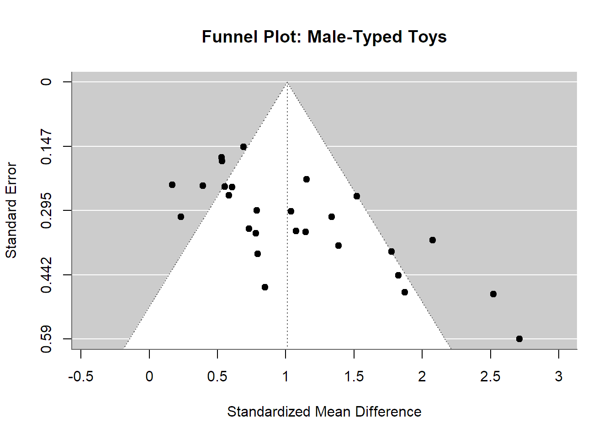
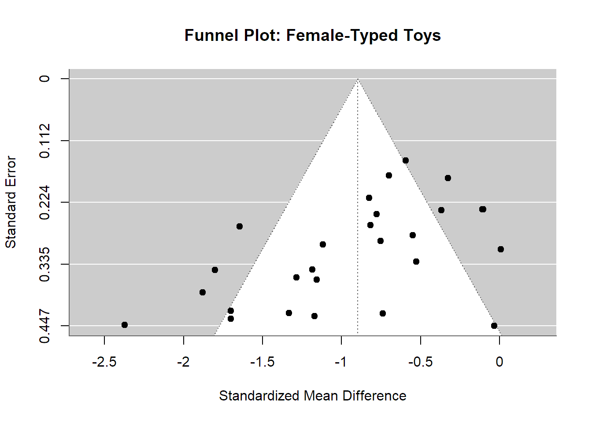
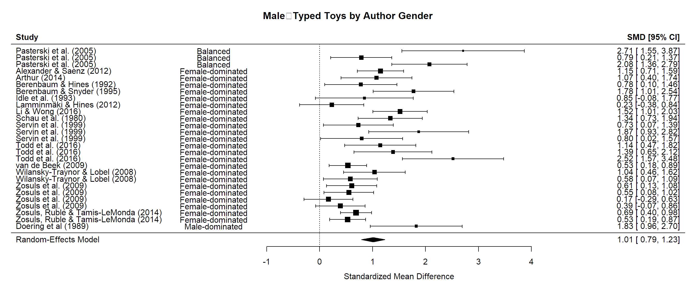

---title:'Meta-Analysis of Children''s Toy Preferences'author:'Your Name'date:"2025-05-24"format:html:theme: lumentoc:truetoc_float:truetitle-block-banner:trueexecute:echo: fenced---
# Load the dataset# Update the path if necessary to match your project structuredata <-read_excel("data/metaanalysis_data.xlsx")# View structure and first rowshead(data)
tibble [27 × 28] (S3: tbl_df/tbl/data.frame)
$ Study : chr [1:27] "Alexander & Saenz (2012)" "Arthur (2014)" "Berenbaum & Hines (1992)" "Berenbaum & Snyder (1995)" ...
$ Female authors : num [1:27] 2 1 2 2 1 2 5 2 3 3 ...
$ Male authors : num [1:27] 0 0 0 0 3 1 1 0 3 3 ...
$ Age (months) : num [1:27] 19.5 19 65.8 93.1 87 ...
$ N_boys : num [1:27] 47 22 18 19 15 10 21 38 12 25 ...
$ N_girls : num [1:27] 47 18 18 19 15 10 21 38 12 25 ...
$ Mean_boys_play_male : num [1:27] 439 148 325 484 260 ...
$ SD_boys_play_male : num [1:27] 166.1 105 270.2 141.3 67.7 ...
$ Mean_girls_play_male : num [1:27] 248.6 54 135.1 202.5 98.4 ...
$ SD_girls_play_male : num [1:27] 161 53 202 168 101 ...
$ Mean_boys_play_female : num [1:27] 377.3 126 33.5 26.4 7.2 ...
$ SD_boys_play_female : num [1:27] 170.9 67 69.5 92 21.5 ...
$ Mean_girls_play_female : num [1:27] 539 244 248 265 145 ...
$ SD_girls_play_female : num [1:27] 214 54 246 241 110 ...
$ Neutral toys : num [1:27] 1 0 1 1 1 1 1 1 1 1 ...
$ Year : num [1:27] 2012 2014 1992 1995 1989 ...
$ Parent present : num [1:27] 3 2 2 2 1 3 2 1 3 3 ...
$ Setting : num [1:27] 2 2 2 1 2 3 2 1 2 2 ...
$ Country : num [1:27] 0.256 0.28 0.252 0.252 0.141 0.141 0.248 NA 0.228 0.228 ...
$ Case definition adequate : chr [1:27] "*" "*" "X" "*" ...
$ Representativeness of cases : chr [1:27] "*" "X" "*" "X" ...
$ Selection of controls : chr [1:27] "X" "X" "*" "*" ...
$ Parental opinion : chr [1:27] "X" "X" "*" "*" ...
$ Comparability of both groups : chr [1:27] "*" "**" "*" "*" ...
$ Ascertainment of behaviour : chr [1:27] "*" "*" "*" "*" ...
$ Same ascertainment method for both groups: chr [1:27] "*" "*" "*" "*" ...
$ Non‐response rate : chr [1:27] "X" "*" "X" "*" ...
$ NOS score : num [1:27] 5 6 6 7 6 8 7 6 7 7 ...
# Compute effect sizes (Hedges' g) and variances for male-typed toyseffects_male <-escalc(measure ="SMD",m1i = Mean_boys_play_male, sd1i = SD_boys_play_male, n1i = N_boys,m2i = Mean_girls_play_male, sd2i = SD_girls_play_male, n2i = N_girls,data = data, vtype ="UB")# Attach to main datasetdata <- data %>%mutate(yi_m = effects_male$yi,vi_m = effects_male$vi )# Compute effect sizes for female-typed toyseffects_female <-escalc(measure ="SMD",m1i = Mean_boys_play_female, sd1i = SD_boys_play_female, n1i = N_boys,m2i = Mean_girls_play_female, sd2i = SD_girls_play_female, n2i = N_girls,data = data, vtype ="UB")# Attach to main datasetdata <- data %>%mutate(yi_f = effects_female$yi,vi_f = effects_female$vi )# Random-effects pooling via REMLres_male <-rma(yi_m, vi_m, data = data, method ="REML")res_female <-rma(yi_f, vi_f, data = data, method ="REML")# Show model summariesres_male
Random-Effects Model (k = 27; tau^2 estimator: REML)
tau^2 (estimated amount of total heterogeneity): 0.2415 (SE = 0.0943)
tau (square root of estimated tau^2 value): 0.4914
I^2 (total heterogeneity / total variability): 75.67%
H^2 (total variability / sampling variability): 4.11
Test for Heterogeneity:
Q(df = 26) = 90.0510, p-val < .0001
Model Results:
estimate se zval pval ci.lb ci.ub
1.0109 0.1130 8.9427 <.0001 0.7893 1.2324 ***
---
Signif. codes: 0 '***' 0.001 '**' 0.01 '*' 0.05 '.' 0.1 ' ' 1
res_female
Random-Effects Model (k = 27; tau^2 estimator: REML)
tau^2 (estimated amount of total heterogeneity): 0.2513 (SE = 0.0963)
tau (square root of estimated tau^2 value): 0.5013
I^2 (total heterogeneity / total variability): 76.69%
H^2 (total variability / sampling variability): 4.29
Test for Heterogeneity:
Q(df = 26) = 95.4681, p-val < .0001
Model Results:
estimate se zval pval ci.lb ci.ub
-0.8967 0.1140 -7.8671 <.0001 -1.1201 -0.6733 ***
---
Signif. codes: 0 '***' 0.001 '**' 0.01 '*' 0.05 '.' 0.1 ' ' 1
# Funnel plot & Egger's test for small-study effectsfunnel(res_male, main ="Funnel Plot: Male-Typed Toys")

regtest(res_male)
Regression Test for Funnel Plot Asymmetry
Model: mixed-effects meta-regression model
Predictor: standard error
Test for Funnel Plot Asymmetry: z = 4.8720, p < .0001
Limit Estimate (as sei -> 0): b = -0.2752 (CI: -0.7954, 0.2450)
funnel(res_female, main ="Funnel Plot: Female-Typed Toys")

regtest(res_female)
Regression Test for Funnel Plot Asymmetry
Model: mixed-effects meta-regression model
Predictor: standard error
Test for Funnel Plot Asymmetry: z = -3.2961, p = 0.0010
Limit Estimate (as sei -> 0): b = 0.1815 (CI: -0.4750, 0.8379)
# Testing moderators: neutral toy inclusion, parental presence, setting, country index, qualityres_male_mod <-rma( yi_m, vi_m,mods =~`Neutral toys`+factor(`Parent present`) +factor(Setting) + Country +`NOS score`,data = data, method ="REML")
Warning: 1 study with NAs omitted from model fitting.
# Forest plot for male-typed toys by author genderforest(res_male,slab = data$Study,order = data$author_gender,ilab = data$author_gender,ilab.xpos =-2,main ="Male‑Typed Toys by Author Gender")

Conclusions
Pooled effect sizes:
Male‑typed toys: Hedges’ g = 1.01 (95 % CI [0.79, 1.23]); boys spend substantially more time with these toys (p < 0.001).
Female‑typed toys: Hedges’ g = −0.90 (95 % CI [−1.12, −0.67]); girls prefer these toys over boys (p < 0.001).
Small‑study effects (Egger’s tests):
Male‑typed toys: z = 4.87, p < 0.001 → pronounced funnel asymmetry.
Female‑typed toys: z = −3.30, p = 0.001 → significant asymmetry in the opposite direction.
Methodological moderators (meta‑regression):
Neutral toy inclusion: Excluding neutral toys amplifies sex differences for female‑typed toys (β = 1.12, p = 0.027). For male‑typed toys, the same covariate and other design factors (parental presence, setting, country GII, NOS score) were not significant (all p > 0.10).
No additional moderators were significant for female‑typed toys beyond neutral‑toy status.
Author‑gender composition:
Male‑typed toys: studies led by predominantly female teams reported smaller boy‑toy differences (β = −0.77, p = 0.033) than male‑led teams.
Female‑typed toys: author‑gender composition did not significantly influence reported girl‑toy differences (all p > 0.20).
Overall, robust sex‑specific toy preferences emerge across studies; however, evidence of publication bias and limited moderator effects suggest future research should focus on preregistered protocols and balanced reporting to clarify true effect magnitudes.